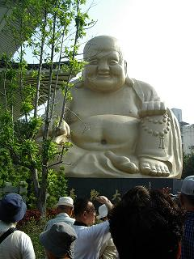
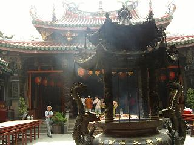
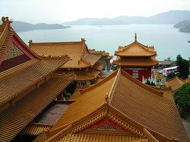
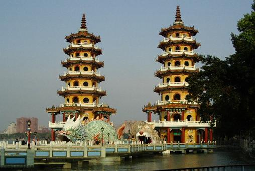
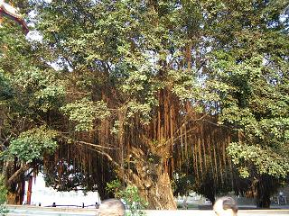

続きを見る
続きを見る 
九州をひと回り小さくしたような台湾島を中心とする中国の一省で、総面積3万6179平方メートル。
現在は共和制の中華民国である台湾は、人口2110万人。首都は台北です。
さて、ホテルの周辺を散策して帰ってきますと、玄関前には三台くらいのバスが止まっていましたが昨日の黄色いバスは来ておらず、まだ少し時間があるというのでだんなはいつものようにぶらりひとり歩き。
また間の悪いことに、だんなの姿が見えなくなると同時に添乗員のシャーさんがやって来て、バスに案内すると同時に部屋のドア前に出してきた自分のカバンが車の近くに来ているかどうか確認するよう促されます。
カバンはちゃんと来ていますが
観光バスはほとんどが二階建てになっているようで、出入り口が二つあります。
後ろの出入り口から下のスペースに入れるようになっており、スーツケースなどの大きな荷物はここから出し入れされ、一階は荷物専用になっています。
そして、座席のある二階に登り下りする階段もこのスペースの反対側に付いているので、バスの乗り降りに時間がかかることもありません。
四輪車などものともせずバイクが疾走する台中の街の朝は、中国の街並とそんなに変わりありませんが、『朝食屋』という店が沢山あります。
台湾の家庭は共稼ぎが多いそうで、主婦は朝食を作らないのが当たり前になっているのだとか…
出勤途中のお父さんから若い娘さんや青年。
お年寄りや登校前の子供とお母さんと見られる人々が、朝食屋さんで食事をしているのがバスの中から見えています。
この日の予定は、金色に輝く布袋様のいる宝覚寺を見学して、エメラルドグリーンの湖水が美しい日月澤を周り、貿易港として栄えた鹿港（ろっこう）を見て高雄に向かう予定で、まずはホテルからそれほど遠くない【宝覚寺】へ…

30.1ｍという巨大な布袋様。
1975年に建立され、当初はコンクリート打ちっぱなしだったため鳥のフン害が酷く、地元の人たちから『鼻くそ大仏』と呼ばれ、1989年に金色に塗り替えられ現在の姿に至ったとか。。。
1999年9月21日の地震によって内部には入れなくなりましたが、布袋様の内部には博物館があったそうで、おへその穴から外が見えたそうです。
お寺自体の建造は1928年だそうで、純粋な仏教であるここには戦前の日本人の遺骨や遺影、遺品など台湾の各地に散らばっていたものを集められた納骨堂があり、14,000人の日本人が眠っているのだそうです。
ちなみに、ここにお骨を預けるには５万元だということです。
それにしても、思ったより暑い…
旅行社から送られてきたパンフレットの平均気温から、タンクトップと長袖しか用意してこなかった私は、タンクトップの上に着たブラウスの袖をまくり上げ、早くも汗とともにファンデーションはハンカチに吸い取られ、半袖ばかりと長袖を一枚だけ持ってきただんなも
「暑い…！」
と手にしたタオルが手放せません。
お次は日月澤へ向かうはずですが、交通状態の都合か何の説明もなく鹿港（ロッコウ）へ…

両側に並木道の細い道路を入っていくと赤い提灯が見え始め、提灯の数が増えていくにしたがって神様に近づいているということがわかるのだそうで、バスを降りた広い【鹿港天后宮】前には赤い提灯がお祭りのように何本もの紐に吊るされておりました。
屋根に沢山の細々とした飾りをつけた立派な門を潜り、境内に入りますと、日本と同じように煙がもうもうと立つ護摩焚きというのでしょうか…（勉強不足で正確な名称は知りません。△＾-＾；）
これが境内の真ん中にあり、両面から龍が守る二重の屋根になっているそこでは、体に煙を浴びせているのは日本人だけのような気がしました。
その左側にある上が白っぽいテーブル様なものが両側に二つずつ並んでおり、本堂に近い方のひとつにお供えにしてはちょっと不思議な葱や大根など野菜が供えられているのには驚きでした。
この鹿港天后宮は、台湾全島の媽租廟の総本山ともいわれ、1683年の媽租の出生地ということで福建省眉州の天后宮から迎えられ、台湾各地の媽租神像はこの鹿港天后宮からの分霊なのだそうです。
このお寺のトイレは境内の外にあるのですが、お寺のトイレとしては五つ星級のものだそうで、そりゃ行ってみなくっちゃ…と立ち寄ってみますと、確かに広くて近代的ではありますがあまりにも殺風景過ぎて、一輪の花なりと置いてあれば心が和むのに…と、またまた余計なことを考えてしまいました。（＾ｖ＾；
台湾にはお寺が二万以上あり、畑の中や屋根の上、街の中でも田舎でもとにかく一日移動する間にいくつのお寺がみつけられるのか…
数えていたら今頃は台湾旅行記を飛ばして日帰りの格安旅行記を打ち込んでいるに違いありません。（＾ｍ＾：
バスは街中を外れ田舎道を走って行きますが、『ビンロウ』の実が眠気覚ましになるのだそうで、運転手さんたちがよく噛んでいるらしいのです。
『ビンロウ』というのは日本にもビンロウ樹という木がありますが、それと同じものかどうかは知りませんが、ところどころにあるそれらしき木を見上げてみると確かに何か緑色の実が生っており、それを漢方薬に漬け込んでひとつずつ葉に包んであるのだとか。
その『ビンロウ』を売っているビンロウ街道というところがあり、人がやっと一人入れそうなビニールやガラス張りの四角い箱が各店の前に作られており、それがずうっと続いています。
その箱の中には水着姿に近いお姉ちゃんがいるのだそうで、人気のあるお姉ちゃんの箱の前には行列ができていたりすることもあるそうですが、私たちが通ったときは空の箱が多かったようで、シャーさんがいち早くみつけては
「いる！いる！いる！」
と教えてくれ、その都度オジサンだけでなくオバサンまで身を乗り出してそちらを見ますが、年配のお姉さんが多かったような…
ひとつだけ若いお姉ちゃんが二人入っているところがあり、その時はゆっくり走っていたバスは更にとろとろ走りとなり、もしかして運転手さんは買いに行きたかったのではないかとシャーさん、下で一人寂しく運転業務に励んでいる運転手さんに聞いています。（＾０＾
どうしてこのように水着姿に近いスタイルになったのかというと、台湾という国は商魂たくましいと言いますか、目立つことが好きだと申しますか、例えば隣同士に同じ店が並んでいる看板の場合、隣の店の看板が自分の店の看板より目立っていると、目立たなくなった店はもっと目立つような看板を掲げ、それがいたちごっこのように繰り返されるのだそうで、アルバイトのお姉ちゃんの服装は少しずつ剥ぎ取られ、容姿なども雇用条件として日増しに重要視されるようになっているのだそうです。
運転手さんにゃっと笑って何も答えなかったそうですが、自称十 十 十八歳のシャーさんは本当に愉快なガイドさんです。
さて、この運転手さんのいる席は一階の左側にあるのですが、その上は…というと床が一段高くなってひな壇のようになった特等席があるのです。
見晴らしの良いフロントガラスに向かってお内裏様とお姫様が並び、警護の二人が一段下がって後ろを守り、その後ろの平坦な部分にはお付の家来たち…
と、そんな感じで通常の入り口から階段を上がった右側の一番前の席に対して、通路を挟んで並ぶ左側の席は三列目になってしまうのです。
で、前から三列目だと思っていた私たちの席は本当は五列目になっており、私は通路側に座っていたのでなんとか前の景色が見えますが、窓際のだんなの席から前は特等席の座席の後ろと空しか見えなかったかもしれません。
シャーさんは階段と二列目の席の真ん中に立っているので、何か連絡をすることがあると階段を少しだけ下りて、運転手さんと話すことができるわけです。
間もなく【日月澤】の湖が見えてきて、エメラルドグリーンの神秘的な湖水が私たちの目を奪いますが、遠くはなんだかモヤが掛かったようになっており、緑深い山々と湖水のコントラストが美しいという風景は見られませんでした。

バスを降りるときに、だんながキャップにツアーバッヂをつけていたことから、
「目立つところに付けてもらって助かります」
とシャーさんからお褒めの言葉をいただき彼は上機嫌。
文の神孔子と武の神関羽が祀られた【文武廟】は、見上げるほどの大きな魔除けの狛犬が、これまた大きな白い球を守っており、普通は雌雄になっていて球を守っているのが雄なのだそうですが、ここでは平等にどちらも球を守っており、写真を撮ったりしていた私たちはシャーさん率いる一行とはぐれてしまいましたが、集合時間もバスの場所も知っていたのでマイペース観光。
山の上に向かって建てられた中国北朝宮殿式の建物は、階段を登る先に幾重にも建物が連なっており、一番高い展望台からは屋根の向こうに湖が広がっておりました。

シャーさんは霧だと説明していましたが、台湾の空はどこへ行ってもこんな風に霞んでおり、私たちにはどう見てもスモッグとしか思えませんでした。（＾へ＾；
普通に順を追って見てきたつもりですが、どこでどう擦れ違ったのかとうとうツアー一行に合流することもなく、集合時間よりかなり早めに駐車場へ戻って来てしまった私たちは、その湖側に下りる階段を見つけかなり好奇心をくすぐられましたが、下った階段は登って来なければならず、へたばって集合時間に遅れてもいけないので上から覗くだけで我慢し、土産物屋を見ながらぶらぶらとバスに戻りましたが無常にもドアはきっちりと閉まっており、頼りの運転手さんさえいません。
どうしようもないので再び食べ物や土産物を売る店を丹念に覗いて周り、昨夜コンビニにあった黒い煮汁の卵をみつけ、『ビンロウ』なるものもみつけてしまいましたが、今は旅先の身であり眠気覚ましには用はなく、タンクトップに長袖で暑さに参っているというのに体が温まってもらっても困るというもので、見なかったことにしました。
もう一度バスに戻ってみると丁度他の人たちも戻っていたところらしく、バスの中で休んでいる人あれば土産物を探す人ありといった様子で、私たちも休み組みに加わろうと階段を登って席に付くと、だんなのキャップにツアーバッヂがついておらず、次に立ち寄る昼食はバッヂに貼った番号でグループ分けがしてあるということで
「俺の番号がわからん（；へ；）」
と焦っていましたが、夫婦は同じ席に決まっているでしょうからなんも心配いらんし、万が一同じ席でなかったとしても（そんなことはないと思いますが…）
「空いてる席に座ればいいよ」
と、ツアーに慣れていない彼をちょっと不安にさせて涼しい顔。
何人もの人がいるとチャレンジ精神旺盛な人もいるもので、あのビンロウを買ってきた人がおり、近くの席の人たちに配っておられましたが、
「赤い汁が出るまで噛んでください」
シャーさん張り切って食べ方の説明をしますが、見ていると一噛みしただけでお手上げの人の中で、たった一人だけ
「うーん、かなり渋いなぁ…」
と言いながら、噛んでいた人がいました。
シャーさんの説明では歯が黒くなってしまうので女性は噛まないのだそうですが、赤い汁が出てくるまで噛んでいると体が温まり、眠気が覚めるのだそうです。
結局残りは運転手さんに貰っていただくことになりました。（＾ｖ＾
【九族文化村】 という大きな看板が山の上に見え、これは地元に昔から住んでいる九つの村の集まりだそうで、現在はもうひとつ増えて十族になっているとのことですが、昼食はこの村の近くの民芸家具店の二階にあるレストランでの郷土料理でしたが、滞在中食べた食事ではここが一番よかったような気がします。
出発編で３０人と書いてしまいましたが、実は２６名の参加者（申し訳ありません。修正済み）で、台湾では『７』という数字は縁起が悪いのだそうで、１０・８・８人の三グループに分かれてターンテーブルに着きました。（もちろんだんなは私の隣に座っておりました）
それまでバスではバラバラの座席に座っていた８人が席に着いてみると、同じくらいの年かさの夫婦ばかりのグループになっており、しかもどの夫婦の前にもビールや紹興酒が…
こうして旅先で一緒に食事をしているということは旅好きな人ばかりということで、自己紹介なんかしなくっても話は盛り上がらないはずがありません。
食事が終わると時間はたっぷりとってあります。
もういるところは下の家具売場を見てまわるしかなく、お店もちゃんと考えていて、デザートのバナナは一階の店で一本ずつ用意しておりました。
家具類は大きなものは応接セットから座卓、小引き出しなどどれもこれも細かい細工が施されており、日本で買ったらさぞかし高価なものでしょうが、素朴な田舎のお店ということで、ありとあらゆる物が雑多に置かれており埃まみれでした。
看板にあった近くの九族民族村は、時間の都合上私たちは行くことはありませんでしたが、少数民族の集落を敷地内に再現されており、それぞれの集落で暮らしの違いが見られるのだそうです。
各民族の歌や踊りも野外ステージで披露されているとか…
おなかも膨れましてバスは高雄を目指して出発です。
街中では縦横に交差することの多かった高速道路は一本道となり、見るものこれといってない山中を走って行くので、何方も瞼が重くなってきます。
途中トイレ休憩としてサービスエリアに立ち寄り、だんなはここが台湾という外国だということをすっかり忘れてしまったのか、すっかり馴染んでしまったのか、ここで私たちは別行動をとりました。
することを済ませて売店の方へ歩いて行くと、広い公園のようになったそこここで親子連れが遊んでいたり、若い二人連れが散歩をしていたり…で、日本でも景色のいいところなどはちょっとした散策ができるようになっていますが、それとはちょっと違ってそこがサービスエリアの駐車場だということを忘れてしまいそうな空気が漂っていました。
売店は日本とそんなには変らず、入り口近くにあったアイスクリーム売場でひとつ買おうとして、８種類くらいあるクリームの品名を見て
「はっ！ここは台湾だったんだ。。。」
漢字だけで書かれた品名をひとつずつ見ていくのですが、えー？アイスクリームの種類って何があったんだっけ？
『丑』でも『牛』でもないんですが、なんとなく『うし』を連想したものを指差すと、
「ミルク？」
おおー！うしでよかったんだ。
コーンに乗せてもらったアイスと交換に７０元を手渡すと
「ありがとうございます」
と言われて、出口に向いていた身体をくるりと若い女店員さんの方に戻し、
「日本語喋れるんだ？」
「スコシダケネ」
はにかんだような笑顔で答える彼女に、なぁーんだ、そんなことなら最初から「これなに？」って聞けばよかったのに。。。
なんて思いながら、にひっと笑って「ツァイチエン」
「サヨウナラ」
可愛い声を背中で聞きながらバスへと急ぎます。
すでにバスに戻っていただんなの隣に座ると時間はぎりぎり、私が手に持っているアイスを見て目を輝かせた彼にもひと口 ふた口…（って、そのひと口で半分くらい口の中に入ってしまいそう…＾～＾；）
【高雄】は昔『打狗（ターカウ）』と呼ばれた小さな村から発展し、都市へと成長したそうで、６０ん年前に海軍兵だった父も立ち寄ったことがあり、その頃にはもう大きな港があったそうです。（1684年開港）
打狗というのは原住民平埔族の一部族の名称で、その部族の言語で「竹林」を意味しているそうですが、漢字で「狗（いぬ）を打つ」と書くのが一般的であったため、都市の名称としてふさわしくないと考えられ、日本の偉い人が日本にも同じような発音で「高雄」という景勝地があると言ったことから、高雄と呼ばれるようになったとか…
中国語では「カオシュン」台湾語では「コーヒョン」と発音されます。
バスにはテレビも搭載されているのですが、台湾語のビデオしかないためシャーさんは台湾の生活内情や学校などのことを一生懸命話してくれましたが、デスクフラグのできない私の頭には上記のことしか残りませんでした。（＾へ＾；

高雄市内に入り、今回のツアーは時間を守る人ばかりだったので少し時間が余ったのか、スケジュールになかった【蓮池潭（リエンツゥータン）】に立ち寄り、蓮の花が有名な淡水湖だそうですが、残念ながら花の時期ではありませんでしたが、湖の上に真っ直ぐではなくクランク状に折れ曲がった橋を渡って、この二つの塔に入ります。
週刊誌の漫画から覚えていたのですが、中国では池の上によくこうした橋を作るのだそうで、これは魔物（キョンシーなど）が後ろからついて来れないようにジグザグにするのだとか…
このジグザグの橋は途中から二手に分かれており、龍と虎が口を開けている入り口と出口にに繋がっています。
「必ず龍の口から入ってください！」
駐車場から湖に沿って橋まで案内したシャーさんから、きつく言い渡されたひと言です。
塔の中に入ってみると、壁に死後の世界が描かれており、右側（だったと思いますが、間違っていたらゴメンナサイ）には地獄絵が、左側には天国の図がぎっしりと描かれております。
もうひとつの塔には何があったかと言いますと…これはこれから訪れたいという人のお楽しみとして残しておきます。♪～（'ε ’
一巡りして橋を戻っていると、もう少し先にも向こう岸にもお寺があり、なるほど…湖の上にもお寺はあるんだ。。。
駐車場に戻ってきたのは集合時間にはちょっと早い時間で、隣接した公園をお散歩です。
が、ここにケアンズの熱帯雨林の奥にあったキュランダ村でみつけた「クビシメ」のような木が沢山あるのを目にして、後でシャーさんに聞いてみたのですが解らないということでした。

その木は…まあこの写真をご覧下さい。
この木はそうでもなかったようですが、太い幹を取り囲むように細い幹が沢山地面から伸びており、初めて枝分かれをするあたりにぼこぼことコブのような物ができており、細い幹だと思っていたものが、そこから伸びている根っこのように見えたのです。
茶色く細長い物が沢山ぶら下がっていますが、これは枝から伸びている物でもしかしたら根っこのような物ではないか…？と思ったわけですが、まったく違う種類の物であったのかもしれません。（ _w_ ;
ホテルに到着後、昼と同じメンバーで丸いテーブルに着き海鮮料理をいただきながら、またもや話が盛り上がり、みんなで夜市へ行こうという事になりました。
ホテル前の舗道を真っ直ぐ歩いて行くだけの判りやすい道程なので、広い道路に沿って進んで行くとある交差点から車は進入禁止となっており、歩行者天国さながらに商店街の舗道に屋台店が並んでいます。
見たこともないようなフルーツが山盛りになっている屋台。
生の内臓ばかりを扱っている屋台。
肉や野菜を長い串に刺して焼いている屋台。
アクセサリーや小物を売っている屋台もありましたが、私の見たかった夜市は食べ物よりは細々とした小物や衣類などがメインになっているもので、ちょっとがっかり…
ホコテンの終わる交差点で引き返し、ホテルの近くで皆さんと別れ便利商店でビールを買って帰りました。
作成:2005-11-12
コメントはこちら
続きを見る